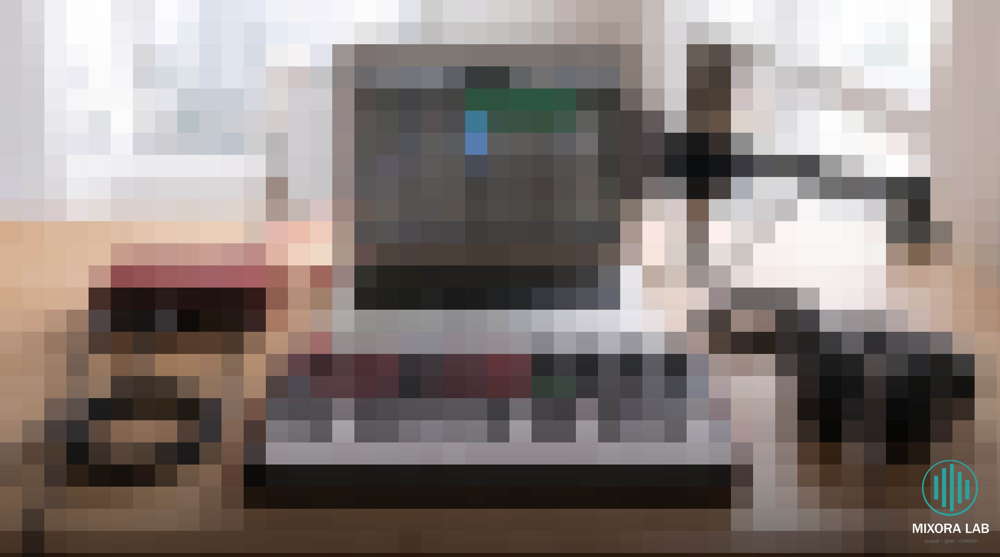
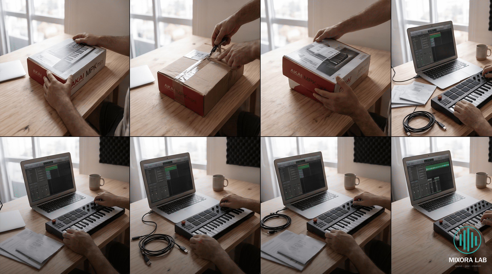

Como Montar um Home Studio (Guia Completo 2026)

Montar um home studio pode parecer complicado no começo, mas na realidade você só precisa de alguns equipamentos essenciais para começar a produzir música com qualidade.
🎹 1. Teclado MIDI (Controle)

O teclado MIDI é responsável por controlar os sons no computador. É essencial para criar melodias, acordes e beats.
🎧 2. Interface de Áudio

A interface permite gravar voz, guitarra e outros instrumentos com qualidade profissional.
🎤 3. Microfone

Ideal para gravação de voz e instrumentos acústicos.
🎧 4. Headphones

Importante para mixagem e ouvir detalhes da produção.
🚀 Dica Final
Você não precisa comprar tudo de uma vez. Comece com um teclado MIDI e evolua seu setup aos poucos.